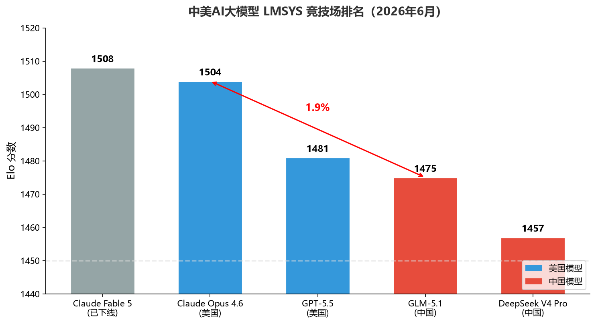
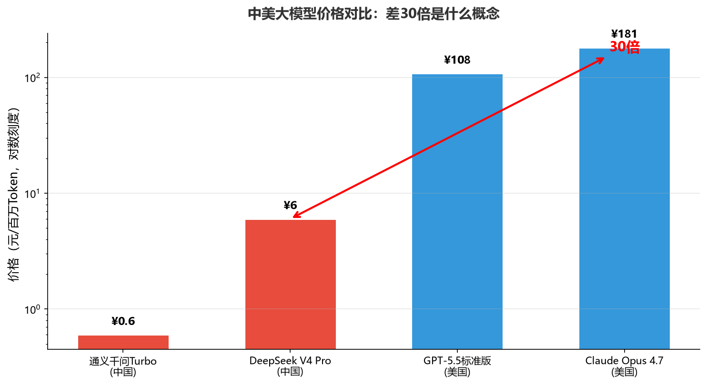
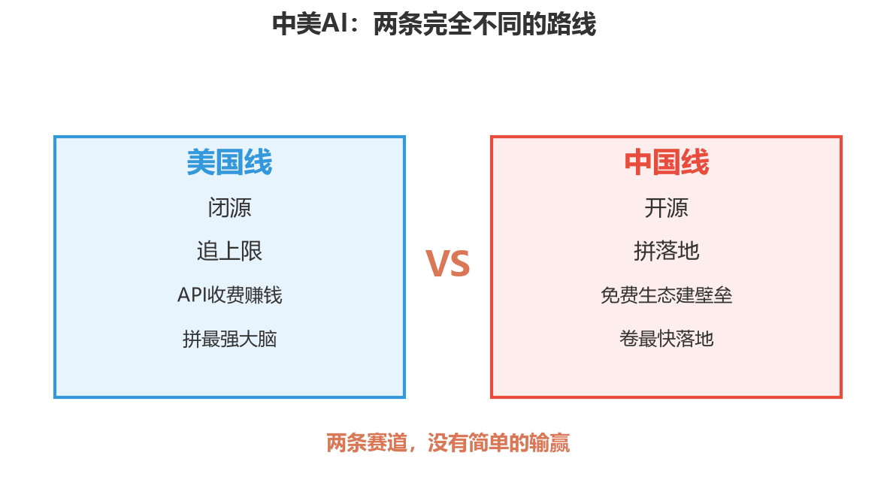

小K·AI行业数据分析 | 2026-06-28
同样是旗舰级大模型，美国最贵的和中国最好的，性能差3%，价格差30倍。翻译成人话：你每月花600块用国产模型能干的事，换美国模型要花一万多——而且大部分场景你根本感觉不到区别。
美国大模型大概领先15个月，但这个数字不是固定的，在3到15个月之间来回波动。去年三月DeepSeek R1出来，差距一度追到只有3个月；现在Claude Fable 5发布，又拉回15个月。
LMSYS竞技场是什么？简单说，就是让两个AI模型同时回答问题，人类评委不看品牌名，纯看回答质量投票。全球最权威的大模型盲测平台，没有之一。2026年6月最新排名：
| 排名 | 模型 | Elo分数 | 来源 |
|---|---|---|---|
| 1 | Claude Fable 5 | 1508 | 已下线 |
| 2 | Claude Opus 4.6思考版 | 1504 | 美国 |
| ~10 | GPT-5.5 | 1481 | 美国 |
| - | GLM-5.1 | 1475 | 中国 |
| - | DeepSeek V4 Pro | 1457 | 中国 |
GLM-5.1比Claude Opus 4.6差29分——1.9%。排名第一的Claude Fable 5，6月9号发布，6月12号美国政府以出口管制为由全球下线，只活了4天。

但这个排名只看综合分数。拆开看单项能力：中文理解中国已经反超；代码能力双方基本持平；数学推理中国开源第一、美国闭源更强；多模态和超复杂Agent任务，美国还领先。翻译成大白话——简单任务差距1%，复杂任务差距5%，顶尖科研任务可能还落后一代。但90%的日常场景，都在前两类里。
性能差3%，价格差多少？看对比：
| 对比档位 | 中国模型 | 美国模型 | 价格差 |
|---|---|---|---|
| 旗舰对旗舰 | DeepSeek V4 Pro ¥6/百万Token | Claude Opus 4.7 ¥181/百万Token | 30倍 |
| 性价比对比 | DeepSeek V4 Pro | GPT-5.5标准版 | 18倍 |
| 最极端对比 | 通义千问Turbo ¥0.6/百万Token | Claude Opus | 300倍 |
实际算账：小公司月跑1亿Token输出（约750万字），GPT-5.5标准版一个月一万多，DeepSeek V4 Pro一个月600块，差17倍。DeepSeek 5月22号已官宣降价永久生效，不是补贴价。

30倍怎么来的？三个原因：
算法设计思路不同。 美国模型走“大力出奇迹”，参数越多越强，但推理成本也越高。中国模型换了个思路：模型参数还是很大，但每次只激活其中一小部分来干活——就像一个671人的公司，每次只派28个人出差，成本自然低一大截。
电力成本差3-9倍。 美国核心算力区电价是中国西部绿电的3-9倍（来源：圣途《中美算力的两条电力之路》2026-06-25）。美国电网老旧，七成设备服役超25年，硅谷新增机房电网接入要排队3-5年。中国西部绿电0.13到0.3元一度。电力占算力运营成本六成以上——电价差3倍，推理成本自然差一截。
DeepSeek主动踩到底。 5月22号官宣降价，永久生效，不是补贴价。Altimeter Capital合伙人Fred Duan说："未来只有两种模型能活下来，要么足够出色，要么非常便宜。DeepSeek就是那条生死线。"
说到这里，很多人会问：既然性能追平了、价格还便宜30倍，那中国AI是不是已经赢了？
没那么简单。李开复说得很到位：中美AI是两条完全不同的线。
美国线：闭源，追上限。 OpenAI、Anthropic、Google三巨头走闭源路线，把最强模型攥在手里，靠API收费赚钱。拼的是"最强大脑"，冲击AGI天花板。但问题也很明显——用不起、落不下、95%的企业AI试点连效果都测不出来。
中国线：开源，拼落地。 DeepSeek、通义千问、GLM全线开源，同等性能价格只有美国的1/10到1/20。拼的是"最快落地"，把AI塞进工厂、港口、农田、手机。全球开发者免费用你的模型，生态就长在你身上。HuggingFace开源模型下载量国产占全球58%。
简单说：美国闭源拼最强大脑，中国开源卷最快落地。两条赛道，没有简单的输赢。

但在训练侧，美国确实还领先5倍以上。高端训练算力，美国占全球75%，中国占15%。最顶级的GPU、十万片级集群、CUDA生态——中国还在补课。斯坦福2026 AI Index的原话：模型性能差距大幅缩小，但训练算力差距依然巨大。
个人和小团队日常用，选国产旗舰，省80%到95%；企业用户简单任务走国产、复杂任务走GPT/Claude，省70%以上；搞科研做超复杂推理的，该花钱还是得花。
但真正的判断是：基础模型会越来越像，就像当年Intel和AMD——护城河不在模型本身，在上面的操作系统和行业应用。 推理时代的基础设施是中国建的，训练时代的王座还在美国手里。这场仗没打完，但账本已经说明了一件事：3%的性能差距，不值30倍的价格。
数据来源：LMSYS竞技场排名：DataLearnerAI 2026年6月16日 | 专项能力数据：SuperCLUE 2026年5月、LiveCodeBench、SWE-Bench | 模型定价：各厂商官方定价页 + 51CTO/Krasa.ai综合报道 | 推理Token消耗量：国盛证券研报 | 训练算力差距：EpochAI、斯坦福AI Index 2026 | 电力成本对比：圣途《中美算力的两条电力之路》2026-06-25 | 开源生态数据：HuggingFace 2026 Q2报告 + CSDN综合 | 引述来源：36氪《AI定价彻底分化，大模型只剩两种活法》2026-06-23 | Claude Fable 5下线事件：BriefChain、OutpostQA等多家报道 | 中美AI两条路线论：李开复2026年公开发言（新浪财经、21财经、51CTO报道） | 95%企业AI试点无效果：MIT 2025年调查 | 开源vs闭源路线分析：网易《中美AI十年决战》2026